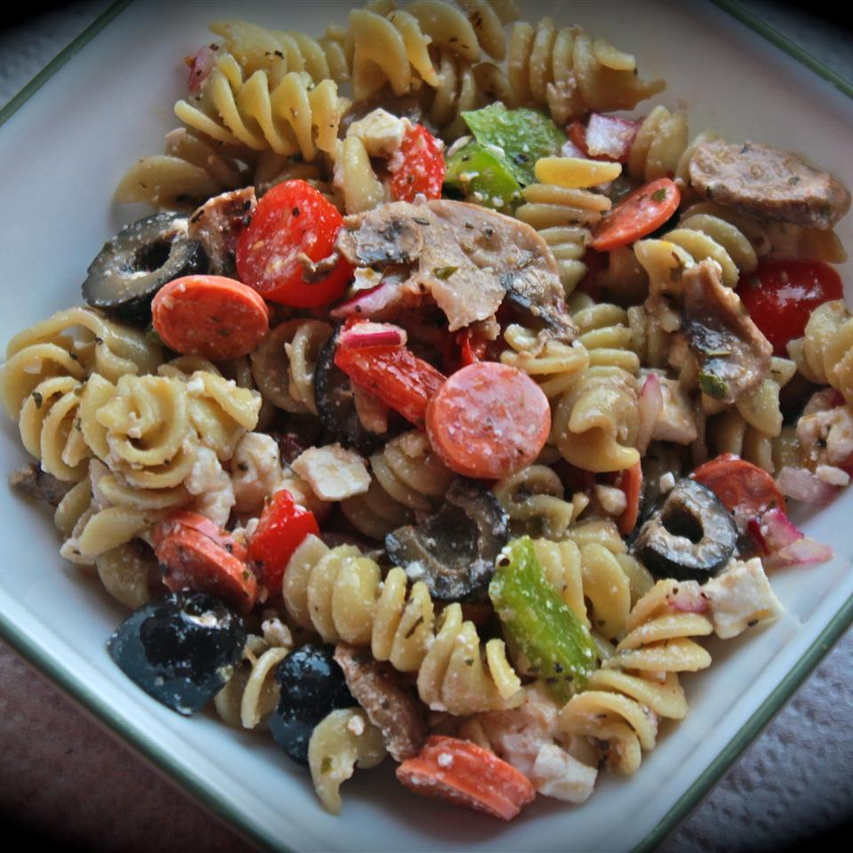

Pasta Salad

Description
This is a great make-ahead pasta salad!
Ingredients
- ½ cup olive oil
- ½ cup red wine vinegar
- ½ tablespoon garlic powder
- ½ tablespoon dried basil
- ½ tablespoon dried oregano
- ¾ teaspoon ground black pepper
- ¾ teaspoon white sugar
- 2 ½ cups cooked elbow macaroni
- 3 cups fresh sliced mushrooms
- 15 cherry tomatoes, halved
- 1 cups sliced red bell peppers
- ¾ cup crumbled feta cheese
- ½ cup chopped green onions
- 1 (4 ounce) can whole black olives
- ¾ cup sliced pepperoni sausage, cut into strips
Steps
- In a large bowl, whisk together olive oil, vinegar, garlic powder, basil, oregano, black pepper, and sugar. Add cooked pasta, mushrooms, tomatoes, red peppers, feta cheese, green onions, olives, and pepperoni. Toss until evenly coated. Cover, and chill 2 hours or overnight.